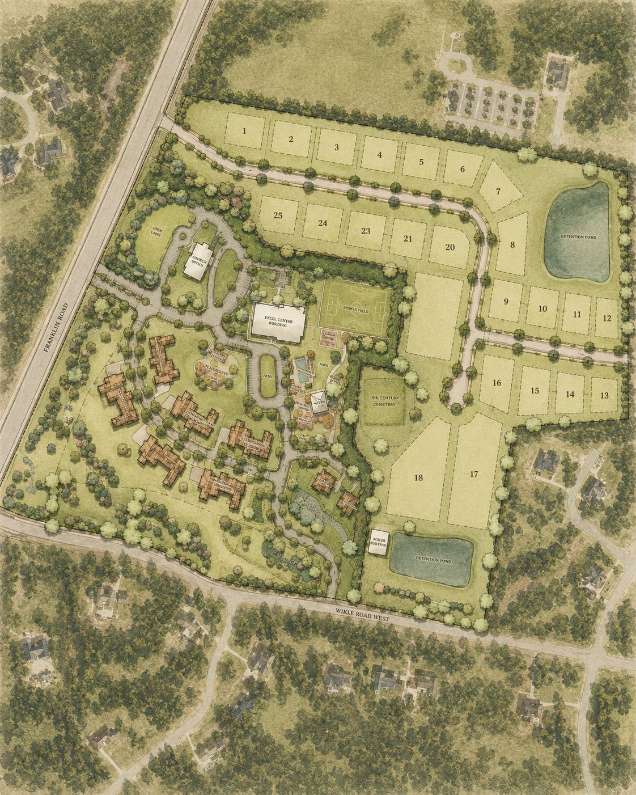

Tennessee Baptist Children’s Homes
A Place That Feels Like Home
Tennessee Baptist Children’s Homes had called its Brentwood campus home for more than a century. Redeveloping it came with a responsibility to honor that history while creating a place that could serve its mission for generations to come.
We began not with plans, but with a question.
Before an engineer or land planner drew a single line, we gathered with the house parents and staff and asked them to describe what they wanted the new campus to be.
Their answers were entirely about the children.
Safe. Loved. Nurtured. Stability. Belonging. Home.
Those words became the vision for the project.
The goal was never simply to develop new buildings. It was to create an environment worthy of the work happening inside them—a campus where buildings become homes, green spaces become places to play, and gathering spaces become places where relationships are built and lives are changed.
Five years later, that vision became a reality.
And in many ways, the completion of the campus wasn’t the end of the project. It was the beginning of what the place could make possible.

The realized campus master plan